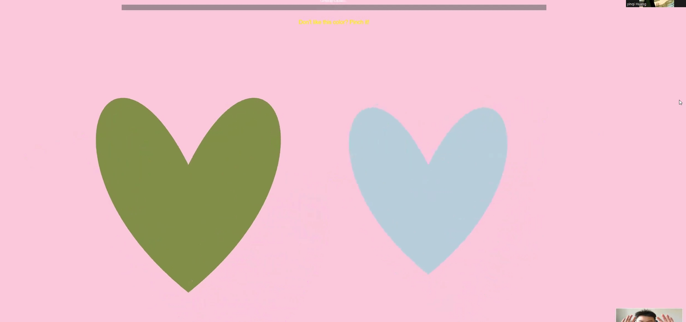
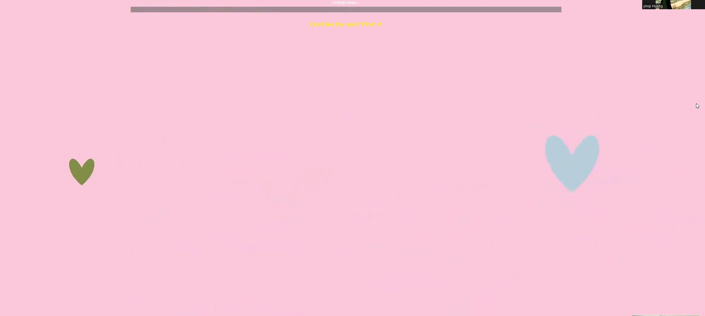
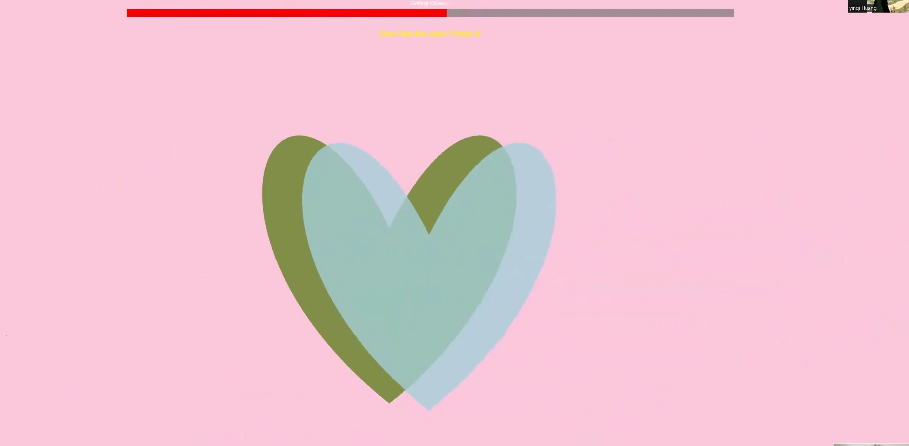

01. Concept & Vision
In a world of digital distance, this project explores how computer vision can facilitate physical and emotional connection. The **Hand Heart Game** is a two-player experience where the goal is simple yet profound: synchronize your gestures with a partner to form a perfect heart, triggering a generative visual celebration.
02. Machine Learning Implementation
I utilized the ml5.js Handpose model to detect real-time skeletal landmarks of the human hand. The system calculates the distance and curvature between specific fingertips (thumb and index) of two different users to determine if a "heart" shape has been successfully formed.


03. Generative Visuals & Interaction
Once a heart is detected, the canvas transitions from a technical tracking mode into a generative art display. I programmed custom particle systems in p5.js that burst from the center of the heart, with colors and density mapped to the players' movement speed.

04. Video Demonstration
Watch how the system tracks multiple hands simultaneously and provides real-time feedback. The interaction requires coordination and collaboration, turning a camera feed into a playful shared space.